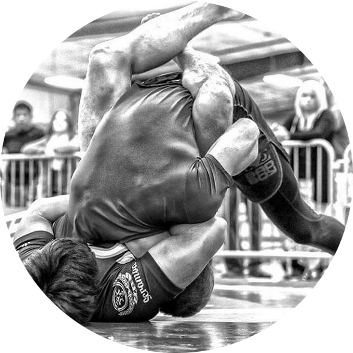

for me are very important. It’s what really determines how you feel coming into a match. When I did my first Jiujitsu tournament a couple of years ago it was rough due to several things.
It was my first time cutting weight. I was very unsure about my takedown defense with the amount of wrestlers in my division.
One of my friends, a blue belt at the time, drilled guillotines with me literally five minutes before my first match, and I ended up beating all three guys in my division with that very submission taking gold. It was really a life changing experience for me...
Like most everyone who competes I feel we all wish to be able to do this sport for a living. I would like it one day to make the world stage and be able to called one of the best in the sport.
You can gain money by working yourself to the bone. But winning and competing for championships, titles, etc. I feel like no one can take that away from you, because that will just be part of your legacy.